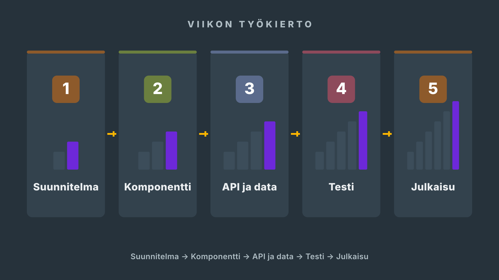
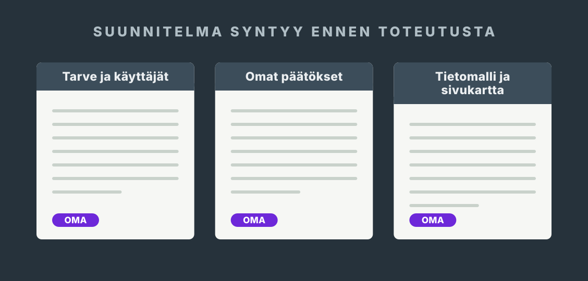
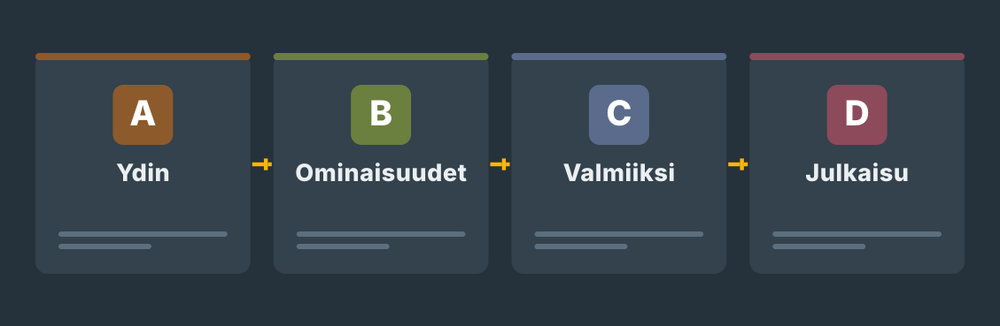
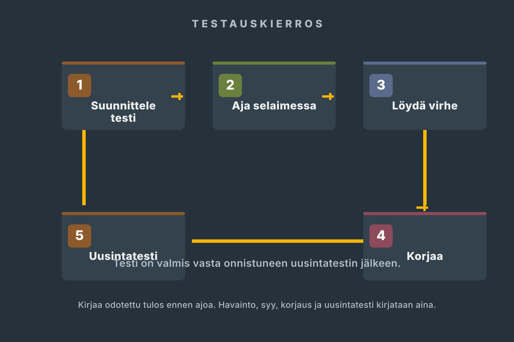
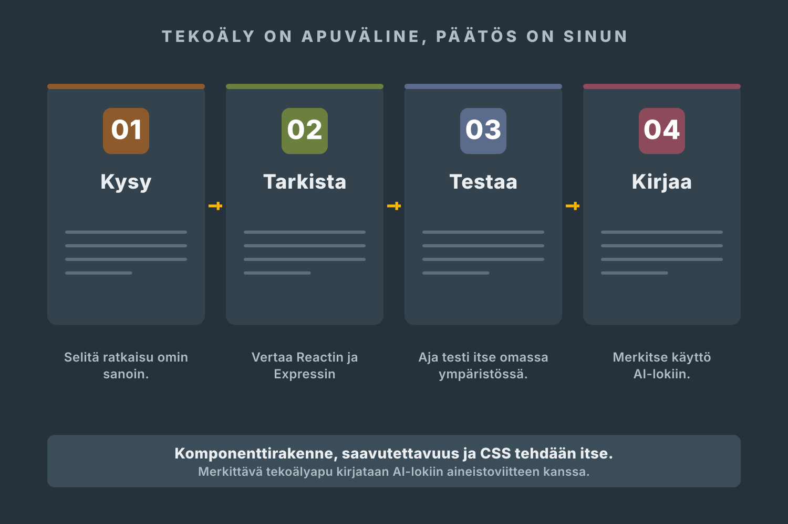

Tee työ projektikansiossa
Varsinainen työ tehdään repositoryn kansioissa: client/ (React-sovellus), server/ (Express ja SQLite) ja project-docs/ (suunnitelma, testit, päiväkirja ja AI-loki).
Näyttöprojekti · Työviikot 1–18
Rakennat 18 työviikossa PeliHyllyn: pelikirjastopalvelun, jossa Pelikellari ry:n jäsenet pitävät kirjaa peleistään, niiden tiloista ja arvosteluistaan. Työ etenee viikko kerrallaan: ensin suunnitelma ja julkaistu runko, sitten tilat, käyttäjät ja profiilit, lopuksi laatu, testaus ja v1.0-julkaisu. Näytössä arvioidaan React- ja Express-toteutuksesi, tietovarastoratkaisusi, testauksesi ja työskentelytapasi. Projektipäiväkirja kirjoitetaan tällä sivulla ja viedään joka viikko repositoryyn.

Mitä tässä näytetään
Projekti kattaa kolme tutkinnon osaa: Ohjelmointi (45 osp), Ohjelmistokehittäjänä toimiminen (45 osp) ja Ohjelmiston toteuttaminen ohjelmistokomponenttikirjastolla (30 osp). Kaikki kolme näytetään samalla työllä. Ohjelmoinnin osaaminen näkyy koodissa, jonka kirjoitat, testaat ja korjaat itse: komponentit, API-reitit ja tietokantakyselyt. Ohjelmistokehittäjänä toimiminen näkyy tavassa tehdä työtä: suunnitelma, priorisointi, versionhallinta, katselmoinnit ja julkaisu tuotantoon. Komponenttikirjaston osuus on React: komponentit, propsit, hookit ja tilanhallinta ovat työnäytteiden ydin.
Tutkinnon osissa on myös tiimissä tehtäviä kokonaisuuksia. Siksi tehtävissä puhutaan tiimistä, katselmoinneista ja asiakkaasta, vaikka rakennat PeliHyllyn muuten yksin: ohjaava opettaja toimii tarvittaessa asiakkaana ja ohjaajana, ja sopimiset, katselmoinnit ja yhteiset päätökset käydään hänen tai muun nimetyn henkilön (kuten työviikkojen 10 ja 16 katselmoijien) kanssa. Ne ovat osa arvioitavaa osaamista, eivät muodollisuus.
Lue tämä ennen viikkoa 1
Tässä toteutuksessa et kirjoita samoja asioita erilliseen Word-pohjaan. Sivuston projektipäiväkirja on projektin suunnitelma, työpäiväkirja ja näyttöaineiston hakemisto.
Varsinainen työ tehdään repositoryn kansioissa: client/ (React-sovellus), server/ (Express ja SQLite) ja project-docs/ (suunnitelma, testit, päiväkirja ja AI-loki).
P0-tarinat pilkotaan tehtäväkorteiksi (issueiksi) työviikolla 2, ja jokainen valmis pala näkyy pienenä tallennettuna muutoksena (committina). Vaiheesta B alkaen muutokset tehdään omissa haaroissa ja yhdistetään pull requestilla.
Yksi tehtäväkortti = yleensä puolen tai yhden päivän työ.Jokaisen työviikon lopussa vastaat neljään kysymykseen: mitä ja miten teit, miksi päädyit ratkaisuun, missä työnäyte on ja mistä jatkat. Suunnitelma ja AI-loki täytetään samalla sivulla.
Kentät tallentuvat vain tähän selaimeen.Lataa koko projektipäiväkirja jokaisen työviikon lopussa, korvaa repositoryn vanha tiedosto ja tee commit.
Tiedosto:project-docs/projektipaivakirja.md. Rasti tällä sivulla ei ole palautus: työnäyte on aina repositoryssa.Tee kerran projektin alussa
project-docs (suunnitelma, testit, päiväkirja ja AI-loki) sekä client ja server.project-docs-kansioon ja tee commit.Vie vastaukset säännöllisesti talteen. Selaimen tallennus ei siirry toiselle laitteelle eikä korvaa Gitissä olevaa työnäytettä.
0 / 18 viikkoa kirjattuPaperinen työpaketti on aikataulu ja tarkistuslista tilanteisiin, joissa sivu ei ole auki. Siihen ei tarvitse kirjoittaa samoja vastauksia uudelleen.
Alkuperäinen Word-pohja on tämän polun lähdeaineisto. Sen aiheet on tuotu sivuston viikkotehtäviin ja projektipäiväkirjaan. Täytä Word-pohja erikseen vain, jos opettaja antaa siitä erillisen palautusohjeen.
Muista: sivuston rastit ja kirjoituskentät ovat oma työmuistisi. Ne tallentuvat vain tähän selaimeen, eivätkä ne siirry opettajalle. Rasti ei ole palautus eikä osa näyttöaineistoa. Rastita vasta, kun työ on testattu ja työnäyte on Git-repositoryssa.
Alkuperäinen toimeksianto · annettu työviikolla 1
Olen Pelikellari ry:n toiminnanvetäjä. Jäsenemme keräilevät ja pelaavat pelejä kymmenillä eri laitteilla, ja jokaisella on hyllyssä ja muistikorteilla enemmän pelejä kuin kukaan muistaa. Haluan jäsenillemme verkkopalvelun, jossa jokainen pitää kirjaa omista peleistään: mikä on kesken, mikä on pelattu läpi ja mistä on tehty kaikki extrat. Tärkeintä on, että pelin tilan vaihtaminen on yhden napin juttu. Jos kirjaaminen on työlästä, kukaan ei tee sitä.
Jokaisesta pelistä pitää saada talteen nimi, laite jolla sitä pelataan, tila, tähtiarvio ja oma kommentti, ja pelin voi merkitä ”pelaan tätä parhaillaan”. Kokoelmat, joilla pelejä voisi ryhmitellä vaikkapa ”NES-hyllyksi” tai ”kauhupeleiksi”, olisivat hienot, mutta tilat, historia ja profiilit ensin. Jäsenet haluavat myös nähdä toistensa profiilit: mitä kaveri pelaa juuri nyt, montako peliä hänellä on kesken milläkin laitteella, ja aikajärjestyksessä sen, milloin mikäkin peli tuli hyllyyn tai meni läpi. Profiili on yhdistyksen yhteinen olohuone: sen pitää kertoa pelaajan hylly yhdellä silmäyksellä.
Vieraiden pitää päästä katselemaan profiileja ja pelilistoja ilman tunnuksia, mutta lisääminen ja muokkaaminen ovat vain omilla tunnuksilla. Salasanat on hoidettava kunnolla: pienen yhdistyksen maine ei kestä vuotoa. Haluan nähdä keskeneräisen version verkossa jo varhain, ja noin puolivälissä haluan itse kokeilla palvelua ja sanoa mielipiteeni ennen kuin loput rakennetaan. Kerro minulle etenemisestä ilman teknistä jargonia: minä ymmärrän pelejä, en palvelimia.
Valmis tarkoittaa minulle sitä, että palvelu on julkisessa osoitteessa, jäsen rekisteröityy itse, lisää pelinsä, vaihtaa tilaa ja löytää kaverin profiilin, ja että saan kirjallisen ohjeen, jolla yhdistys saa palvelun käyttöön vaikka tekijä ei ole paikalla. Viestit toisten profiileihin olisivat kivoja, mutta ne saavat jäädä pois, jos homma alkaa paisua. Mieluummin vähemmän ja kunnolla.
Huomaa: Pelikellari ry ja sen toiminnanvetäjä ovat kuvitteellisia. Asiakkaan roolia esittää nimetty ulkopuolinen henkilö, ei oma ohjaava opettajasi. Ohjaaja nimeää henkilön viimeistään työviikolla 3, ennen ensimmäistä tilannekatsausta.
Sovittu toteutustapa
React + Vite, Node.js + Express ja SQLite
client/, server/ ja project-docs/. Kaikki dokumentaatio yhteen kansioon.P0 eli pakollinen ydin: rekisteröityminen ja kirjautuminen, pelien lisäys ja muokkaus, tilanvaihto ja automaattinen tilahistoria, julkinen profiili tilastoineen sekä julkaisu tuotantoon. Julkaisualusta (Render, Railway tai Fly.io) on sinun päätöksesi työviikolla 3, ja sama julkinen osoite pysyy käytössä v1.0-julkaisuun asti.
Pidä rajaus
Viestit toisten profiileihin ovat P2 ja saavat jäädä kokonaan pois: asiakas sanoi sen itse.
Kokoelmat (monta-moneen) eivät kuulu työviikkoon 9. Kriteerit kirjataan työviikolla 9 ja päätös tehdään työviikolla 11: toteutus omana haarana vain, jos P0 ja testaus ovat aikataulussa; muuten kokoelmat siirtyvät v1.1-listalle. Siirto on rajauspäätös, ei epäonnistuminen.
Älä lisää: valmista UI-komponenttikirjastoa lomakkeisiin tai profiiliin, omaa suositusalgoritmia, kaverilistoja, chattia, sähköposti-ilmoituksia, pelitietokannan hakua ulkoisesta rajapinnasta eikä mobiilisovellusta.
Älä myöskään vaihda tekniikkaa kesken projektin tai aloita uudelleen puhtaalta pöydältä. Yksi kunnolla tehty ominaisuus opettaa enemmän kuin kolme puolivalmista.
Sovi ohjaajan kanssa
Näitä ei päätetä itse eikä tekoälyllä. Tyhjä kenttä suunnitelmassa on oikea tulos niin kauan kuin asia on sopimatta: merkitse se avoimeksi asiaksi.
Projektin resurssit ja pohjat
Tekoälyn raja: komponenttirakenne, saavutettavuusratkaisut ja CSS tehdään itse; koko sovelluksen CSS on omaa käsialaasi. Pelin lisäyslomake (työviikko 5) ja profiilisivu (työviikko 8) rakennetaan alusta itse ilman valmista UI-komponenttikirjastoa. Tekoäly saa selittää virheilmoituksia, tarkistaa ratkaisuja ja ehdottaa testitapauksia. Kirjaa käyttö AI-lokiin.
Pidä punainen lanka näkyvissä
Ennen koodia
Suunnitelma täytetään viikolla 2 ja siihen palataan viikoilla 11 ja 16. Esitäytetyt osiot tulevat toimeksiannosta; kaikki päätökset ovat silti sinun, ja ne testataan omassa työssäsi nimetyillä viikoilla.
Ajoitus: Täytetään työviikolla 2 · päivitetään viikoilla 11 ja 16

Esitäytetty pohja · tulee mukaan tiedostoon
Pelikellari ry (kuvitteellinen peliharrastajien yhdistys) haluaa jäsenilleen pelikirjaston seurantapalvelun: pelit, tilat, tähtiarviot, kommentit, kokoelmat, julkiset profiilit ja tilahistoria.
Rekisteröityminen ja kirjautuminen, pelien lisäys ja muokkaus, tilanvaihto ja automaattinen tilahistoria, julkinen profiili tilastoineen sekä julkaisu tuotantoon.
Projekti käyntiin
Tämä ei ole erillinen tehtävälista. Samat työvaiheet tehdään viikkokorteissa 1–3. Kehitysympäristö toimii, repository on olemassa julkisen repon pelisäännöillä ja toimeksiannosta on kirjattu kysymyslista ohjaajalle; ensimmäinen commit on tehty.
Lue Pelikellari ry:n toimeksianto ja alleviivaa vaatimukset ja epäselvyydet.
Kirjaa vähintään kahdeksan kysymyksen lista ohjaajalle: rajaus ratkeaa kysymällä, ei arvaamalla.
Asenna ja todenna työkalut: Node LTS, Git ja editori. Tulosteet talteen päiväkirjaan.
Luo Vite + React -projekti ja käynnistä kehityspalvelin. Sovi ohjaajan kanssa julkisen repon pelisäännöistä.
Luo etärepository, lisää README ja .gitignore ja tee ensimmäinen commit ja push. Projekti on nyt olemassa muuallakin kuin omalla koneella.
Palvelun rakentuminen
Avaa vain nykyinen viikko. Lue ensin viikon kärki: se kertoo, mikä palvelussa toimii tämän viikon jälkeen. Tee vaiheet järjestyksessä, testaa valmis kun -ehto ja täytä viikon projektipäiväkirja.

Työviikot 1–5
”Haluan jäsenillemme verkkopalvelun, jossa jokainen pitää kirjaa omista peleistään: mikä on kesken, mikä on pelattu läpi ja mistä on tehty kaikki extrat.”
Näin toimeksianto alkaa. Ensimmäisellä työviikolla et vielä rakenna palvelua: luet toimeksiannon, kirjaat sen kohdat joita et voi päättää itse, ja pystytät ympäristön ja repositoryn, joihin loput 17 työviikkoa tallentuvat. Lue koko toimeksianto.
Ohjattu työ Näin etenet
Ennen kuin jatkat: Tarkista viikon valmis kun -ehto.
Näytä: Repositoryn osoite, ensimmäisen commitin tunniste, työkalutodennusten tulosteet ja project-docs/kysymykset.md.
Ohjattu työ Näin etenet
Ennen kuin jatkat: Tarkista viikon valmis kun -ehto.
Näytä: project-docs/suunnitelma.md, tietomallikaavio, rautalangat, issue-taulu arvioineen ja ohjaajan kirjallinen kuittaus P0-rajauksesta.
Ohjattu työ Näin etenet
Ennen kuin jatkat: Tarkista viikon valmis kun -ehto.
Näytä: Julkinen osoite, julkaisuloki tai kuvakaappaus, k2-muistio ja tilannekatsausviesti project-docs/viestit.md-tiedostossa.
Ohjattu työ Näin etenet
Ennen kuin jatkat: Tarkista viikon valmis kun -ehto.
Näytä: Commitit, kuvakaappaus normaali- ja virhetilasta sekä testikirjaukset T1–T2.
Ohjattu työ Näin etenet
Ennen kuin jatkat: Tarkista viikon valmis kun -ehto.
Näytä: Commitit, validointisääntötaulukko, curl-tulosteet ja testikirjaukset T3–T5.
Työviikot 6–10
Ohjattu työ Näin etenet
Ennen kuin jatkat: Tarkista viikon valmis kun -ehto.
Näytä: Commitit, siirtymätaulukko, sqlite3-kyselyn tuloste ennen ja jälkeen sekä T6.
Ohjattu työ Näin etenet
Ennen kuin jatkat: Tarkista viikon valmis kun -ehto.
Näytä: Vertailumuistio ohjaajan kommentilla, commitit, curl-tulosteet sekä T7–T8.
Ohjattu työ Näin etenet
Ennen kuin jatkat: Tarkista viikon valmis kun -ehto.
Näytä: Kuvakaappaus ja rautalanka rinnakkain, commitit, tarkistuskyselyn tuloste, T9 sekä ketju 1:n kirjaus, jos aito bugi osui tälle viikolle.
Ohjattu työ Näin etenet
Ennen kuin jatkat: Tarkista viikon valmis kun -ehto.
Näytä: Commitit, perustelumuistio ulkoisesta komponentista, API-kutsun ja käyttöliittymän rinnakkaiset tulokset, T10–T11 sekä laajennuspäätöksen kriteerikirjaus.
Ohjattu työ Näin etenet
Ennen kuin jatkat: Tarkista viikon valmis kun -ehto.
Näytä: Katselmointimuistio (rooli, ajankohta ja lainaukset), päivitetty issue-taulu ja yhteenvetoviesti.
Työviikot 11–15
Ohjattu työ Näin etenet
Ennen kuin jatkat: Tarkista viikon valmis kun -ehto.
Näytä: Pull requestin linkki ja commit-historia, suunnitelman diff kirjattuine kokoelmapäätöksineen sekä asiakasviesti.
Ohjattu työ Näin etenet
Ennen kuin jatkat: Tarkista viikon valmis kun -ehto.
Näytä: Kuvakaappaukset laitteelta, Lighthouse-raportit ennen ja jälkeen, commitit sekä T12.
Ohjattu työ Näin etenet
Ennen kuin jatkat: Tarkista viikon valmis kun -ehto.
Näytä: Testimatriisi tuloksineen, ketjukirjaukset ja korjauscommitit.
Ohjattu työ Näin etenet
Ennen kuin jatkat: Tarkista viikon valmis kun -ehto.
Näytä: Commit-sarja, project-docs/tietoturva-arvio.md ja regressiokirjaus.
Ohjattu työ Näin etenet
Ennen kuin jatkat: Tarkista viikon valmis kun -ehto.
Näytä: README ja project-docs/, .env.example sekä kuivaharjoituksen loki.
Työviikot 16–18
Ohjattu työ Näin etenet
Ennen kuin jatkat: Tarkista viikon valmis kun -ehto.
Näytä: Julkaisuehdokkaan tagi, julkaisutestin pöytäkirja (rooli, ajankohta ja testaajan sanat), löydösten luokittelu ja ketju 3:n aloitus.
Ohjattu työ Näin etenet
Ennen kuin jatkat: Tarkista viikon valmis kun -ehto.
Näytä: Tagi v1.0, tuotannon osoite, julkaisutiedote ja savutestikirjaus.
Ohjattu työ Näin etenet
Ennen kuin jatkat: Tarkista viikon valmis kun -ehto.
Näytä: Täsmälinkitetty näyttömatriisi, itsearvio, demorunko ja luovutuskuittaus.
Jokainen työskentelykerta
Nyrkkisääntö: jos et pysty selittämään muutosta, työ ei ole vielä valmis.

Laadunvarmistus
Testaus ei ole pelkkää sivujen klikkailua ja toteamista, että toimii. Kirjaa odotettu tulos, havaittu tulos, virheen syy, korjaus ja uusintatesti.
Tekoäly on sallittu apuväline
Näytön ydin (komponenttirakenne, saavutettavuusratkaisut ja CSS) tehdään itse. Tekoäly saa selittää virheilmoituksia, tarkistaa ratkaisujasi ja ehdottaa testitapauksia. Jokainen merkittävä käyttö kirjataan AI-lokiin.

Selitä omin sanoin, mitä ratkaisu tekee ja miksi se sopii juuri tähän projektiin ja omaan tietomalliisi.
Vertaa Reactin, Expressin ja SQLiten dokumentaatioon. Tekoäly voi keksiä vääriä kenttiä ja komentoja.
Aja testit itse. Älä koskaan keksi testituloksia tai palautetta.
Merkitse merkittävä käyttö, omat muutokset ja se, mitä opit.
Oma AI-loki
Huomaa: selaimeen tallentuva loki on työmuisti, ei sellaisenaan osa näyttöaineistoa. Se tulee mukaan koko projektipäiväkirjan lataukseen. Voit ladata myös pelkän AI-lokin ja tallentaa sen project-docs-kansioon.
Ei merkintöjä vielä.
Näyttöaineisto
Pelkkä valmis tuotos ei näytä koko osaamista. Työnäyte on yksi tuotos, joka osoittaa osaamisesi: commit, kuva, testirivi tai muistio. Näyttöaineisto on kaikki työnäytteesi yhdessä. Sama työnäyte voi kelvata useaan kohtaan. Kokoa jokaisesta kohdasta linkki, commit, kuva, lokimerkintä tai päätösmuistio.
Opiskelija käyttää ohjelmistokehitysympäristöä
Opiskelija ohjelmoi
Opiskelija toimii ohjelmistokehitystiimin jäsenenä
Opiskelija kommunikoi asiakkaan kanssa
Opiskelija suunnittelee ohjelmiston toteutuksen
Opiskelija kehittää ohjelmiston toimintalogiikkaa ja tietovarastoyhteyksiä
Opiskelija versioi ja julkaisee ohjelman
Opiskelija käyttää kehitysympäristöä
Opiskelija toteuttaa ohjelmiston ohjelmistokomponenttikirjastolla
Viimeinen viikko
Uutta sisältöä ei enää lisätä. Nyt varmistetaan, että osaaminen näkyy.
Paperinen aikataulu
Paperinen paketti auttaa seuraamaan aikataulua ja tarkistamaan näytön vaatimukset. Varsinainen projektipäiväkirja kirjoitetaan tällä sivulla ja viedään repositoryn project-docs-kansioon.
Julkaistut työt
Valmiit v1.0-tuotokset nostetaan tänne viikolla 17: nimi, kuvakaappaus, lisenssi ja julkaisulinkki.
Ensimmäiset työt julkaistaan viikolla 17.